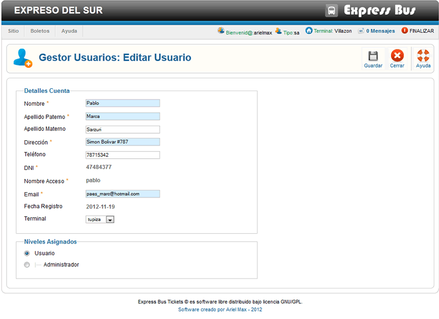

Ayuda Editar Usuario
En esta ventana podemos cambiar los datos del usuario modificarlas, pero no se podra cambiar el nombre de Acceso ni el DNI esto por razones de control y seguridad.
En esta ventana podemos cambiar los datos del usuario modificarlas, pero no se podra cambiar el nombre de Acceso ni el DNI esto por razones de control y seguridad.